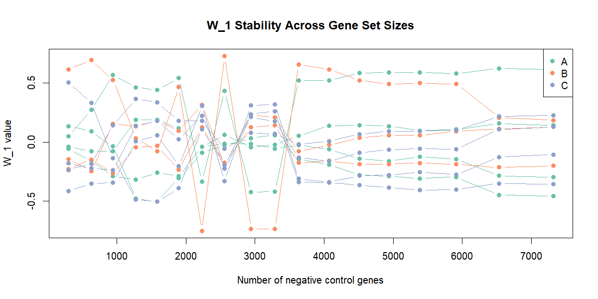

I have been working on fine-tuning my bulk RNA-seq analysis for my current project. This is the first chapter of what I hope becomes a blog series. I enjoy documenting, learning, and maybe helping someone else figure out a similar challenge.
So, I went through a refinement strategy called RUV-seq, Remove Unwanted Variation. What I dealt with these days was beyond my expectations. It felt like a benchmark journey, and it kept pulling me toward finding the most beautiful result. But I learned something. Don't chase what looks beautiful. Look at what can actually explain itself.
When you apply RUV to your data, naturally you want to see if it worked. And the first thing everyone does, myself included, is look at the PCA plot. Did my groups separate? Did the clusters tighten? It's visual, it's intuitive, and it feels like a verdict.
I was obsessed with it. I kept tweaking parameters, changing the number of negative control genes, trying different thresholds. All while staring at PCA plots and asking myself: does this one look better than the last one?
The problem is, "better" in a PCA is subjective. You're eyeballing dots on a 2D projection of thousands of dimensions. Two people can look at the same PCA and disagree on whether it improved. And worse, a PCA that looks clean might actually be the result of over-correction, where you've removed real biology and forced the groups apart artificially.
I realized I was decorating, not analyzing.
So I took a step back and asked: what does RUV actually produce? Not what does it show me. What does it give me?
The answer is simple. For each sample in your dataset, RUV estimates a single number, called W1. That's it. One number per sample. This number represents how much of the "unwanted variation" each sample carries. Later, you hand this number to your differential expression model as a covariate, and the model accounts for it.
So the real question isn't "does the PCA look nicer?" The real question is: is that number reliable?
Here's where it gets interesting. To run RUV, you need to give it a set of negative control genes. Genes you believe are not differentially expressed, so any variation in them must be technical, not biological. The more confidently non-changing genes you provide, the better RUV can estimate the unwanted variation.
But how many genes is enough?
I tried a range, from a few hundred to several thousand. And at each count, I recorded the W1 values RUV estimated for every sample. Then I plotted them: x-axis is the number of genes, y-axis is the W1 value, one line per sample.

What I saw was clear. Below roughly 3500 genes, the W1 estimates were chaotic. Lines crossing, jumping, reversing. The estimate was unstable, meaning it was driven by whichever specific genes happened to be included, not by a consistent underlying signal. But past 4000 genes, the lines flattened out. Each sample settled into its own stable value. Adding more genes didn't change the answer anymore.
That's the stabilization point. And that's where you can trust the estimate.
There's one more thing to check, and to be honest, I think this is the part most people skip. Even if your W1 estimate is stable, you need to ask: is it capturing technical variation, or is it secretly tracking my biology?
Think about it. If all your treated samples happen to get high W1 values and all your controls get low values, then W1 isn't estimating a batch effect. It's estimating your treatment. Putting it in the model would subtract biology and call it noise. You would lose real signal and never know it. Your DE results would come back looking clean, and you would trust them, and they would be wrong.
You can test this with a simple statistical test, an ANOVA, which asks: are the W1 values different between my experimental groups, or are they scattered independently of condition? In my case, the answer was clear. No association. The unwanted variation was genuinely unwanted.
I came into this looking for the perfect PCA. I left with something less photogenic but more honest: a stabilization curve, a statistical test, and the confidence that my correction is doing what it claims to do.
The PCA still exists. It still shows group structure. But it's not my evidence anymore. It's just a visualization. The evidence is in the diagnostics.
If you're working with RUV-seq and you find yourself tweaking thresholds to make the PCA look right, stop. Look at what RUV is actually giving you. Check if it's stable. Check if it's safe. Let the numbers decide, not the dots.
Sometimes the best answer isn't the most beautiful one. It's the one that can explain itself.